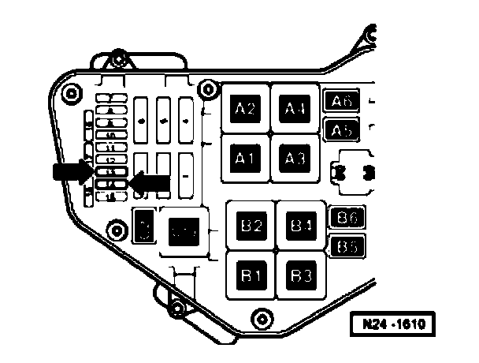

Fuel Supply System
Safety precautions when working on the fuel supply system
Caution! When doing any repair work, especially in the engine compartment, pay attention to the following due to clearance issues:
^ Route all the various lines (e.g. for fuel, hydraulics, EVAP system, coolant, refrigerant, brake fluid and vacuum lines and hoses) and electrical wiring so that the original positions are restored.
^ Ensure sufficient clearance to all moving or hot components.

^ For safety reasons, fuses - 13 - and - 14 - - arrow - must be removed before opening fuel system because fuel pump can be activated by door contact switch in driver's door.
^ Fuses 13 and 14 are located in fuse holder of electric box in plenum chamber on left.
When removing and installing the fuel gauge sender or fuel pump (fuel delivery unit) from a full or partly full fuel tank, observe the following:
Caution! Fuel supply lines are under pressure! Before removing from hose connection wrap a cloth around the connection. Then release pressure by carefully pulling hose off connection.
^ Before beginning work, switch on the exhaust extraction system and place an extraction hose close to the sender opening in the fuel tank to extract escaping fuel fumes. If no exhaust extraction system is available, a radial fan (as long as motor is not in air flow) with a displacement greater than 15m 3 /h can be used.
^ Prevent skin contact with fuel! Wear fuel-resistant gloves!